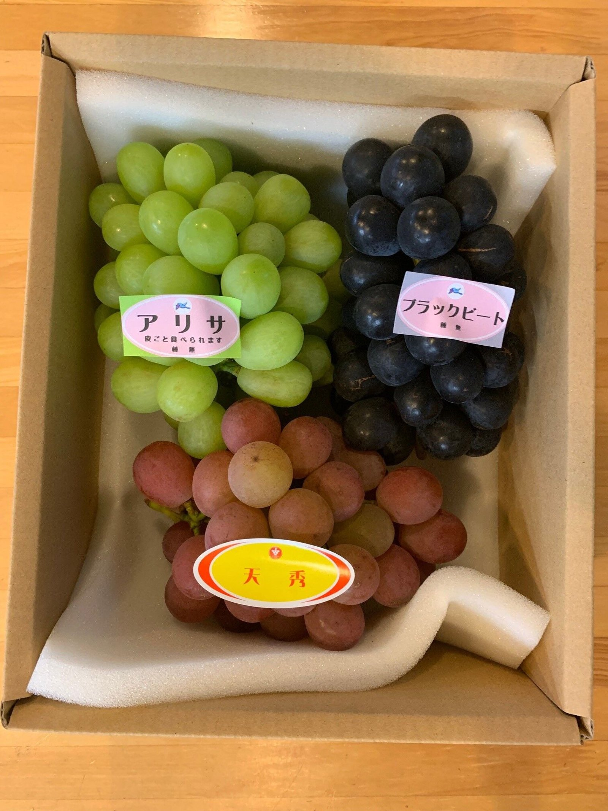
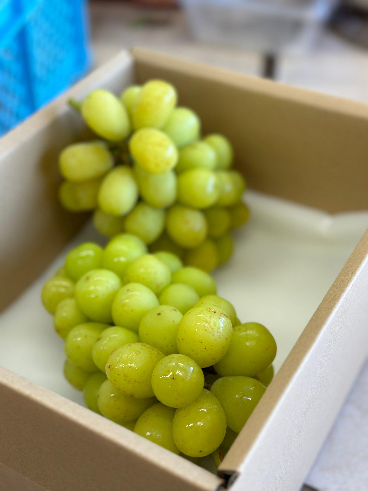
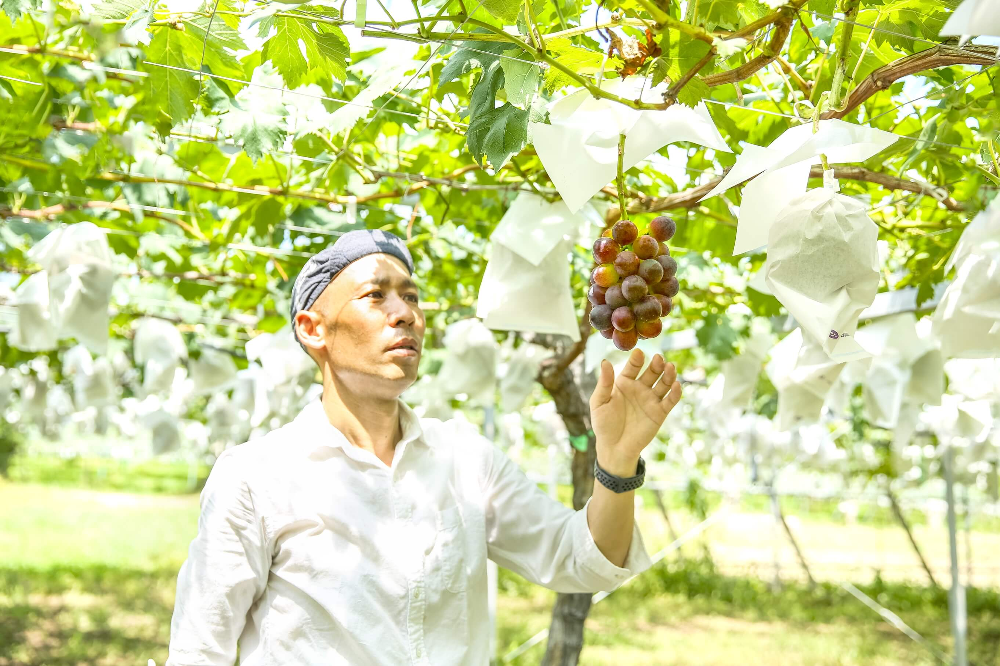
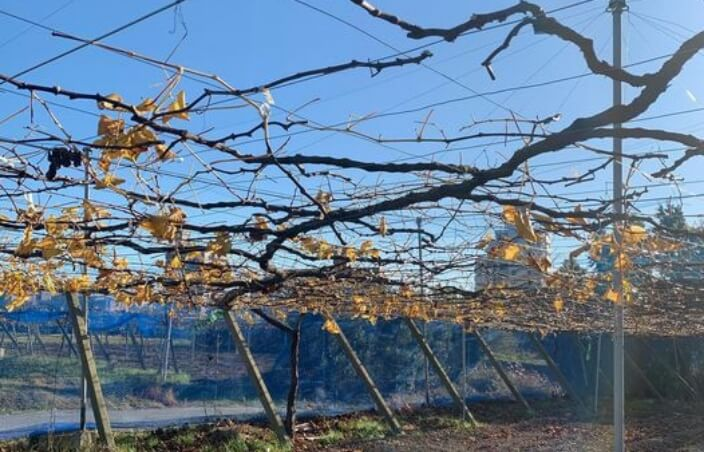
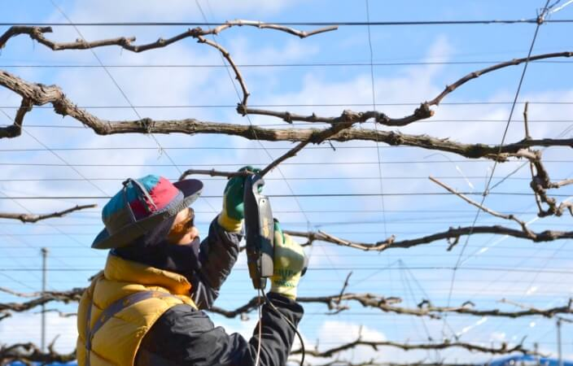
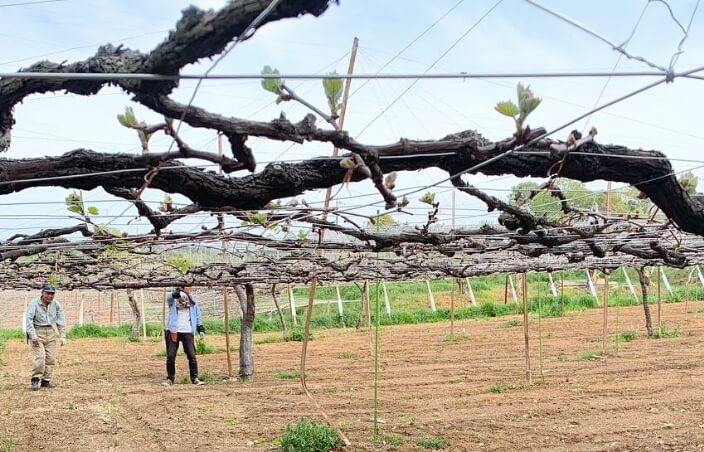
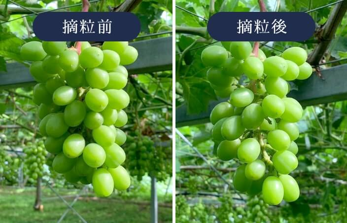
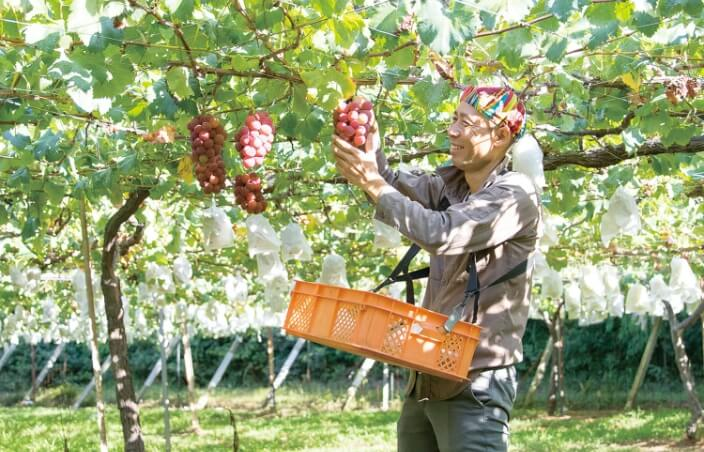
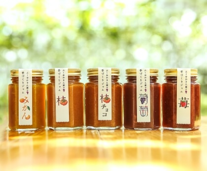
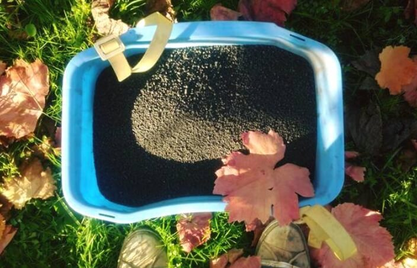

農園の歴史
直売期が短いから、お店をつくりました。
ぶどうの直売期（8月上旬〜9月下旬）は短いため、通年で選んでいただけるオンラインショップを立ち上げました。
いつでもどこでも、農園の商品を選んでいただけるように。直売が終わったあとも畑仕事をしながら、加工所でジュースやジャム、ドライフルーツをつくっています。冬マルシェに来られない方にも、贈答品をゆっくりご覧いただけます。


農園について
愛知県の日進市と豊田市、2つの農園でぶどう栽培一筋およそ60年。モットーは「安全でおいしく、ぶどう本来の味を追求すること」です。

農園の歴史
ぶどうの直売期（8月上旬〜9月下旬）は短いため、通年で選んでいただけるオンラインショップを立ち上げました。
いつでもどこでも、農園の商品を選んでいただけるように。直売が終わったあとも畑仕事をしながら、加工所でジュースやジャム、ドライフルーツをつくっています。冬マルシェに来られない方にも、贈答品をゆっくりご覧いただけます。



作り手
農園を始めたきっかけ
祖父の代にぶどう作りを始めました。お客さまに好まれるぶどうへと品種を見直し、種なしをはじめ今では40種類ほどを栽培しています。
ぶどう作りへの想い
味はもちろん、珍しいものを取り入れた品種構成や栽培技術まで、常に新しいことを考えながら取り組んでいます。
お客さまに届けたいもの
わたしたちのぶどうはスーパーなどでは販売していません。手間ひまかけて育てたおいしいぶどうを、目の前のお客さまの顔を見て、自分たちの手でお渡ししたい。背景にある物語も含めて味わっていただけたら幸いです。
栽培へのこだわり
一年のぶどうづくりを、順を追ってご紹介します。お客さまの「おいしい」という笑顔を想像しながら、毎日ぶどうと向き合っています。
ぶどうの樹と対話しながら枝を切り、樹のバランスを決めます。若い樹から樹齢30年越えの樹まで、それぞれに合った剪定を。同時に樹の皮を削り、越冬する病害虫を駆除します。

剪定した枝を棚全体へ配置し、針金とともに強く縛ります。新枝が風で擦れないようにし、通気性をよくします。

必要な芽に養分が行き渡るよう、不要な芽を取り除きます。経験を頼りに房の大きさを調整します。大粒系は特に房を小さくしないとおいしく育ちません。

余分な房を除き、残した房から粒を整えます。品種ごとに粒や軸の大きさが違うので慎重に。気候も見ながらの、時間との勝負です。

病気や鳥、虫、タヌキやハクビシンなどから守るために袋で覆います。伸びすぎた枝を切り、実に光と養分を行き渡らせます。その後、収穫です。

8月上旬ごろから販売開始。開始日は天候で変わり、SNSで7月下旬にお知らせします。パック売りから贈答用箱まで。一番種類が豊富な時期は、来てからのお楽しみです。10月はなくなり次第終了します。

直売後はジャム・ドライフルーツ・ジュースなどの製造へ。葉が落ちた頃、畑に肥料をあげます。果樹は永年作物。より良い土づくりも、わたしたちの仕事です。


農薬は使用基準に従い病害虫防除をしています。残留農薬は毎年JA愛知経済連で検査しています。